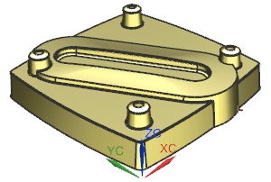
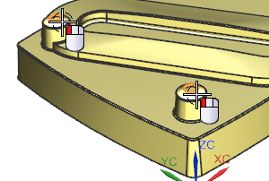
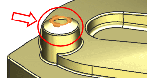
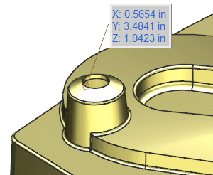

Open gwy1_85_measurements_2.

Choose Analysis→Measure Extremes.
From the Type list, select 3D Extreme Point.
You want to find out which of the two close bosses are the tallest.
From the Type Filter list, select Edge.
With Select Objects active, select the two circular edges at the top of the two closest bosses.

In the Primary Vector group, use the Specify Vector drop-down list to select ZC.

Notice it found several points. Read and then dismiss the Alerts message.
In the Secondary Vector group, from the Specify Vector drop-down list select –XC, and click OK.
In the Results Display group, from the Annotation drop-down list to select Show Dimension, and click OK.

There is now only one point identified, and the label is created showing its location value in the absolute coordinate system.
The annotation label is a temporary display. Press F5 to refresh the graphics window.